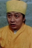

Also known as:天師撞邪 (original title)
Country:China, 92 minutes
Spoken languages:
Genres:Action, Comedy, Fantasy
Director(s):Yuen Woo-ping
Writer(s):Yuen Woo-ping, Chiu Chung-Hing
Video Codec:Unknown
Number: 246


Certification:
Storyline:
This very strange movie shows the sort of thing Yuen Woo-ping will do when he is left to his own designs and imagination. Even strange for him, this movie involves vampires, huge monster toads, and drunk monks. For some of the effects puppets were used, including a very creepy/realistic dummy version of the Drunk Monk. The fight scenes are very creative and show off Yuen Woo-ping's weird sense of style and choreography.
Cast: 


Medium: Original DVD,
Comments: Part of: The Martial Arts Essentials Volume 4 - The Films of Yuen Wo Ping Series Two
Loaned: No
Aspect ratio: Unknown